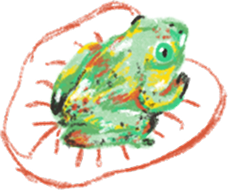

Lydia J Gallegos
Mexico City

Lydia is a multidisciplinary graphic designer that enjoys solving complex visual systems that involve digital and mixed media - or whatever she can get her hands on. Current corporate girlie - occasional freelancer. She spins.
For work inquiries you can find me in LinkedIn, check out my resume or request my portfolio via email.
Find me on Instagram, Letterboxd and Are.na.
Thank you for visiting